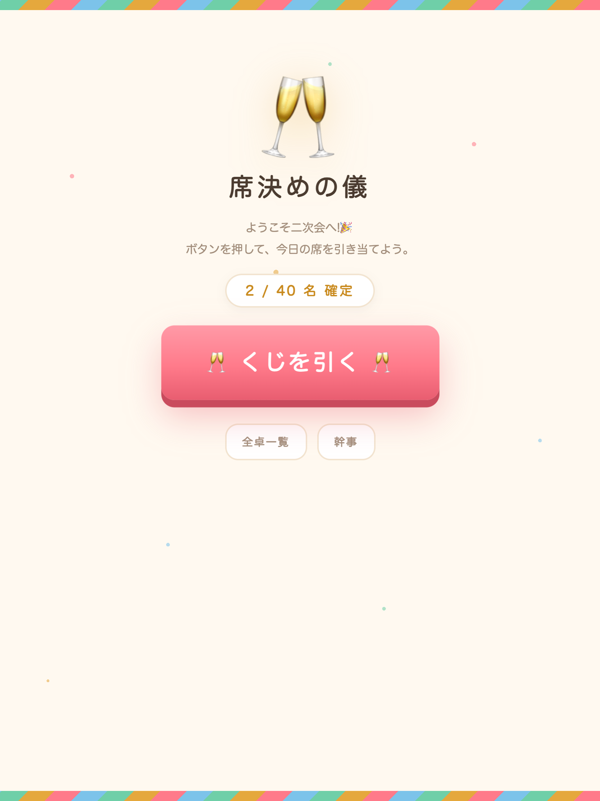
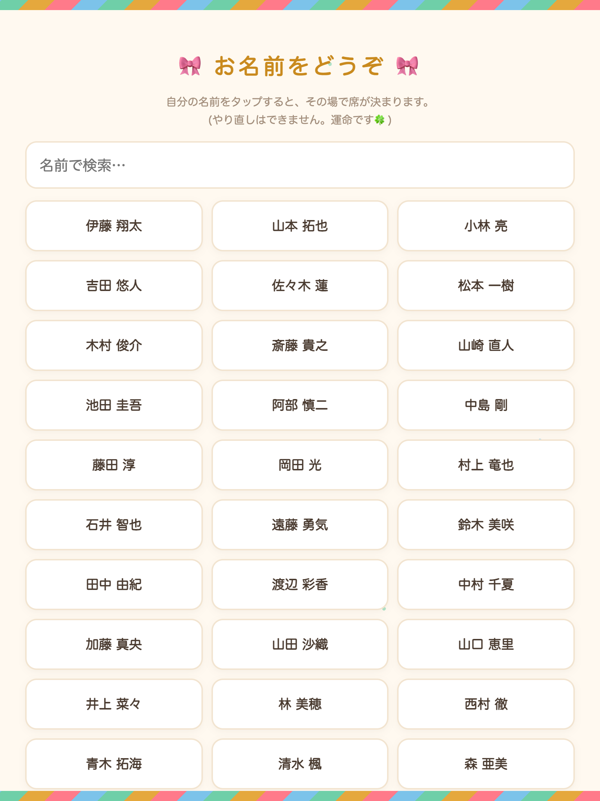
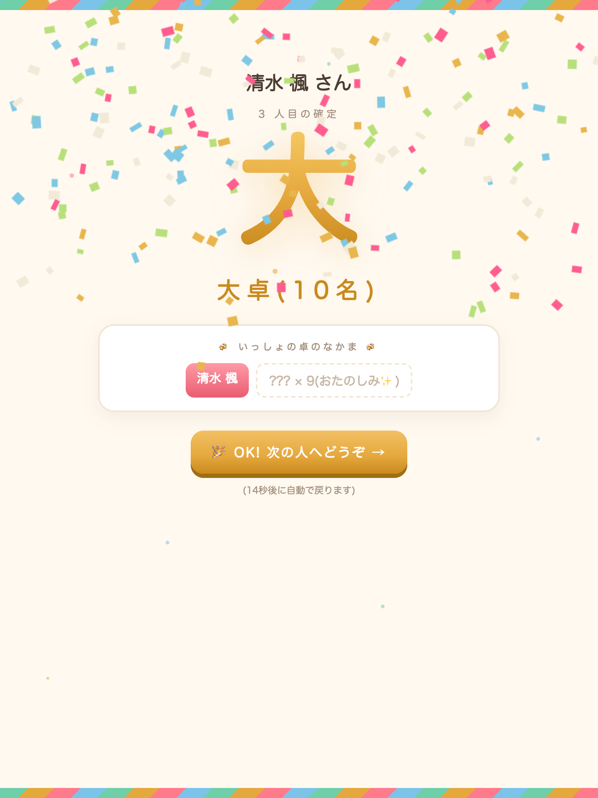
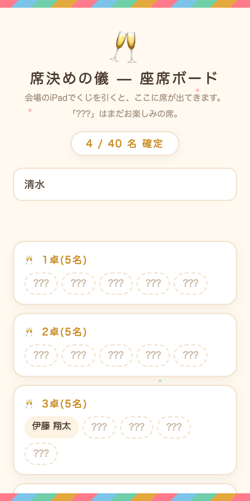
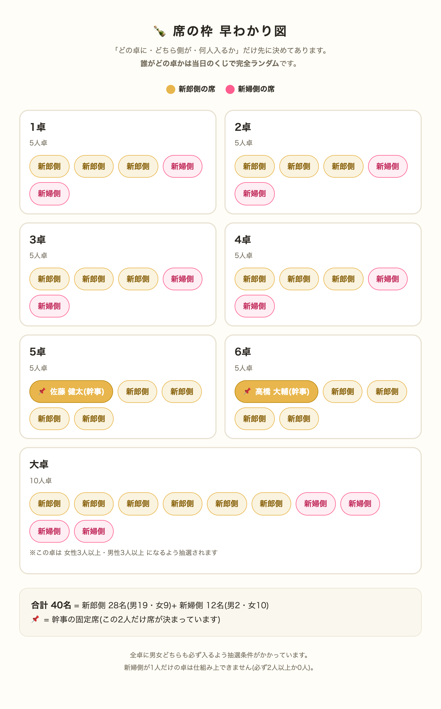

結婚式二次会・席決め抽選 — 会場のiPadでくじを引く方式
受付に置かれたiPadで、来た人から順番にくじを引いて席を確定させていく抽選アプリです。引くまで自分の席は誰にもわかりません(幹事にも、機械の中の運命だけが知っています)。
やることは「iPadで名前を押す」だけ。スマホでは今の席の埋まり具合がいつでも見られます。
会場に着いたら受付のiPadへ。ピンクの大きなボタンを押すと名前の一覧が出ます。

名前を押すとスロットが回り、運命の卓が発表されます。もう変更はできません。すでに確定している同卓の仲間も表示されます(まだの人は「???」)。
⚠️ 他人の名前を押さないこと。幹事しか取り消せません。


招待QRコードのページ(スマホ)には、いま確定している全員の席がリアルタイムで表示されます。まだ引いていない人の席は「???」。自分の名前で検索すると光ります。

「どの卓に・どちら側が・何人入るか」の設計図です。新郎新婦・幹事間の確認用に、この画像をそのままLINEなどで共有できます(waku.html でも見られます)。

事前準備
ipad.html の CONFIG を設定: ゲスト名簿(名前+性別+新郎側/新婦側)、各卓の枠、幹事の固定席(FIXED)、必ず同卓にしたいペア(PAIRS)。設定ミスは開いた瞬間にエラー表示されます。waku.html の図を新郎新婦に共有して合意をとる。ipad.html を開き、「幹事」→PIN→サーバーPINを保存(スマホの座席ボードに映すために一度だけ)。当日
ipad.html を開いて待機画面のまま置いておくだけ。結果画面は15秒で自動的に待機画面へ戻ります。
Safariの「データを消去」をしないこと(確定履歴はこのiPadの中にあります)。画面ロックの自動オフも切っておくと安心。
待機画面の「幹事」→PIN入力で、確定履歴の一覧から1件ずつ取り消せます。取り消した人は名前一覧に復活します。
iPadに「🎉 全席確定! 🎉」が出ます。あとは焼肉を楽しむだけ。